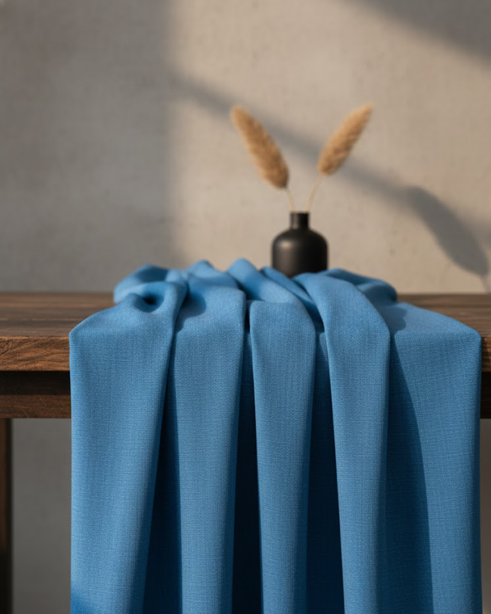
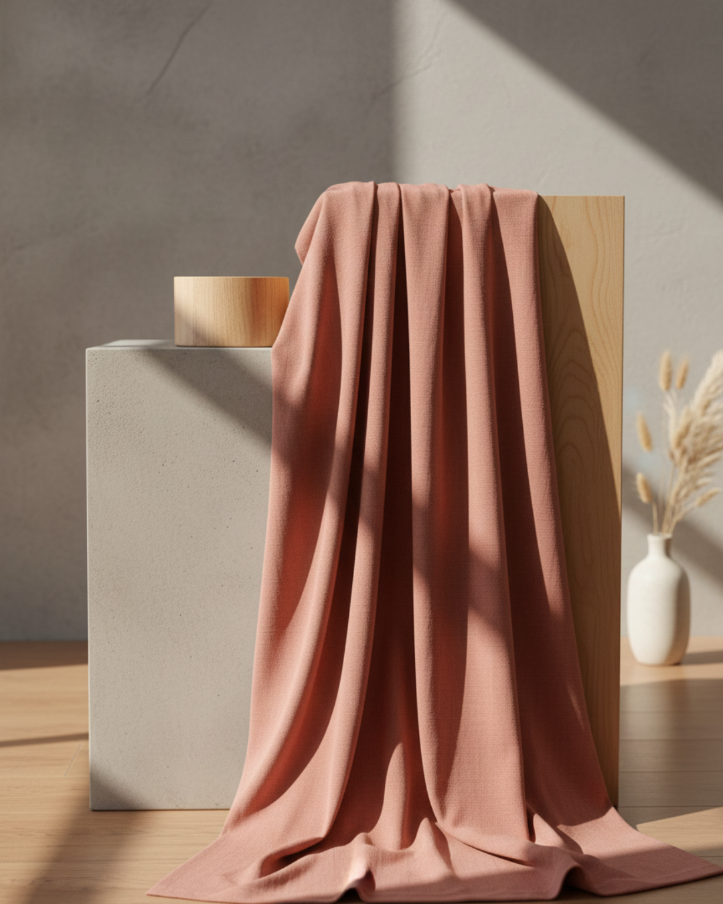

Tissomi, TexIndienne’s pioneering brand, delivers premium womenswear fabrics built for high quality,
reliable supply, and consistent performance. Curated for manufacturers who value dependable materials,
the collection combines modern appeal with comfort, durability, and a finish you can trust.
Explore our Products
Experience textures firsthand with our curated fabric swatch collection.
Explore a curated fabric range spanning compact cotton, fluid viscose, certified lyocell,
and premium synthetic weaves, each selected for hand feel, drape, and reliable performance.


Identity
Tissomi, derived from the French word 'tissu,' is a canvas where femininity
intertwines with fabric. 'Tissu' meaning fabric, and 'omi' representing an
intimate connection, together craft a brand that celebrates the timeless
beauty and grace of women through exquisite fabric artistry.
Beyond mere clothing, Tissomi is an expression of refined elegance,
each thread weaving a story of sophistication and charm. Step into
the world of Tissomi, where every creation is a brushstroke capturing
the essence of feminine allure and personal style.